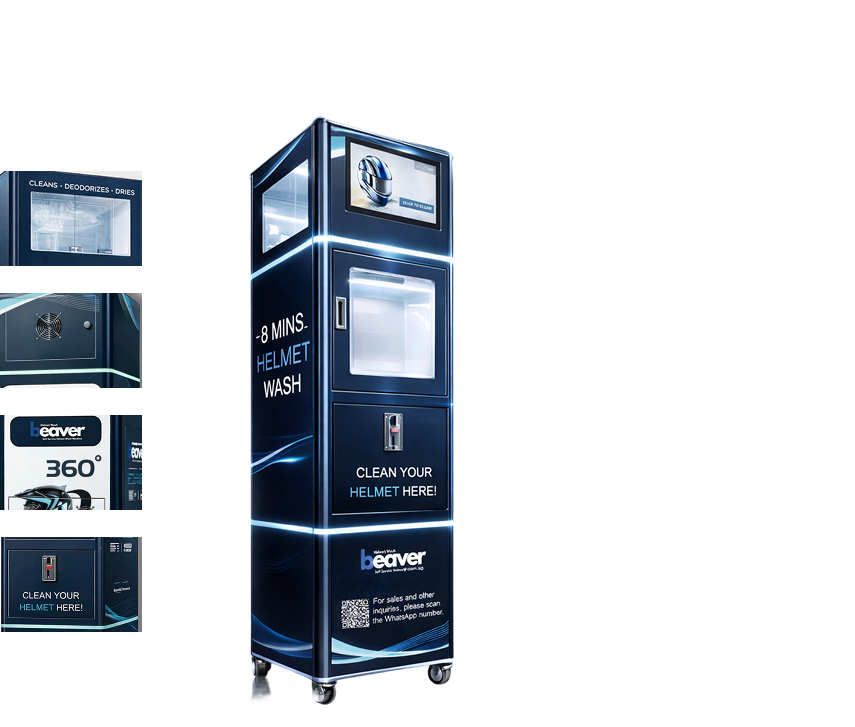

Start the Beaver helmet cleaning machine by making a payment.

Upgrade your business with an automatic helmet cleaner machine
Helmet cleaner machine
Helmet washing machines integrate advanced sterilization technology to clean, sanitize, and deodorize the helmet. With a rapid drying system and innovative technology, our helmet cleaning machine offers a sanitized helmet in just 8 minutes.
-

Minimal Staff Assistance
Our helmet washing machine operates independently, requiring minimal staff assistance.
-
Commercial-Grade Performance
The durable and commercial-grade motorcycle helmet cleaning machines can be strategically placed in high-traffic locations to serve a wider customer base.
-
24/7 Revenue Opportunity
Beaver helmet washing machines are designed to operate long hours, generating passive revenue 24/7.
-
Compact Design
The compact design of our helmet sanitizer machine allows owners to transform small spaces into a profitable business.
Insert the helmet into the helmet cleaner machine carefully.
Wait for around 8 minutes while the helmet sanitizer machine is operating.
Collect the sanitized helmet once the sanitizing process is completed.
-
360° UVC Sterilization
Our automated bike helmet sanitizer uses 360° UVC sterilization for 99.9% bacterial removal.
-
LED Lighting System
Advanced LED lights allow clear visibility of the interior for transparency, and for convenience at nighttime.
-
High Definition Touch Display
A waterproof high definition touch screen is included in our helmet cleaner machine for durability and convenience.
-
Safe Detergent
The Beaver helmet cleaning machine uses safe detergents specifically formulated to remove grime and sweat without damaging the helmet quality.
-
Fast Drying Function
The rapid drying system in the helmet washing machine provides a sanitized helmet in 8 minutes, minimizing drying time.
-

Convenient Cashless Payment
Our helmet washer machines accept a cashless payment system for a smooth and convenient purchase.
Frequently Asked Questions
The Beaver Helmet Wash can clean various types of helmets. Note: Always check the cleaning instructions from the helmet manufacturer before using the Beaver or any other cleaning method.
Yes, the Beaver uses an environmentally friendly cleaning process by:
- Avoiding harsh chemicals and detergents.
- Using low-temperature drying and ozone sterilization, which consume less energy.
- Providing a long-lasting cleaning solution that reduces waste compared to single-use wipes or sprays.
The Beaver helmet wash cleaner is priced at 5 SGD.
A typical wash cycle in the Beaver Helmet Wash takes only 8 minutes to finish.
The machine uses UVC light and advanced cleaning components to ensure 99 percent sterilization.
Yes, the system is designed to be gentle on all helmet surfaces.
No, the helmet can be sanitized as it is.
The machine accepts cashless payments.
No, it only requires electricity and cleaning chemicals.
Regularly check and maintain healthy chemical levels in the machine to ensure optimal performance.
Yes, it can be programmed to accept any currency available.
Yes, a 1-year manufacturer warranty for parts, including the helmet purifier, is included with every purchase.
It's a fast sanitizing machine with improved sterilization, faster cleaning cycles, and a compact design that integrates seamlessly into any environment. It's ideal for businesses that prioritize hygiene and efficiency.
Our helmet cleaning machine uses advanced technology to achieve 99.9% bacterial removal. The machine is designed to maintain the quality of the helmet.
Of course, our helmet cleaning machines are effective as they use advanced technologies to sanitize helmets, and the process only takes 8 minutes.
You just have to visit the helmet washing machine near you, tap the screen, make payment, and insert your helmet into the machine and collect when it is ready!
You can wash your helmet at a helmet cleaning machine near you every 1–2 weeks to prevent bacterial buildups and odors. In hot and humid weather, you may clean it lightly after every 1–2 rides.
Yes, our automatic helmet wash machines use advanced LED technology and 360° sterilization to effectively sanitize bike helmets.
Yes, the helmet wash machines are safe for various helmet types. The machines ensure to maintain the quality and lifespan of helmets.
No, our helmet wash machine only requires electricity and cleaning chemicals to operate.